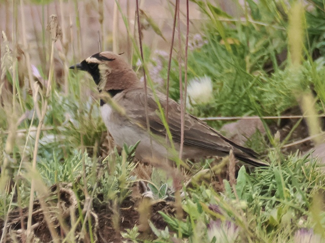

Horned Lark
Eremophila alpestris
Other names: Shore Lark
Order: Passeriformes
Family: Alaudidae

A brown ground-dwelling lark. Male has a yellow face, black collar, black mask and black "horns". Found on grassland. The atlas subspecies is found exclusively in the Middle and High Atlas mountains of Morocco.